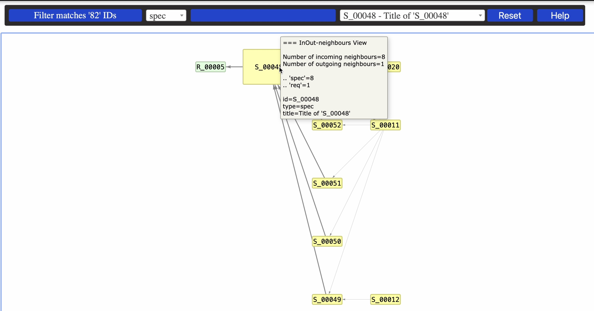
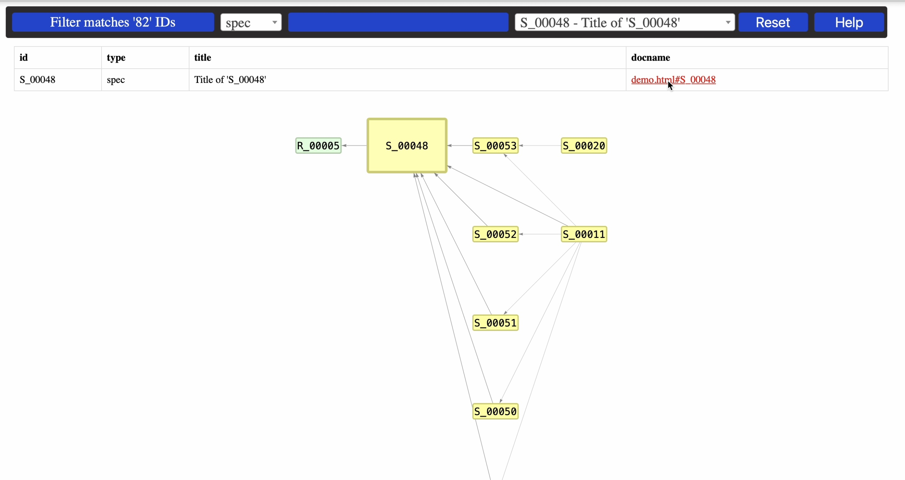
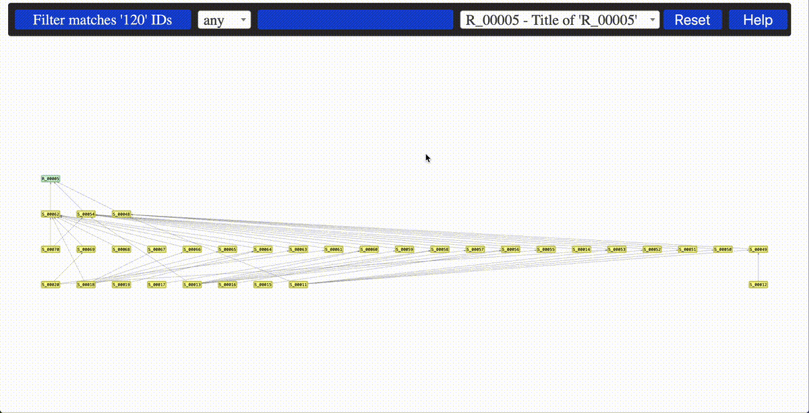

Sphinx Needs Data Explorer#
About#
sphinx_needs_data_explorer enhances the interactivity of your Sphinx
generated documentation by enabling you to explore Sphinx-Needs data.
Goals and Realization#
Screenshots#
Example 1: exploring In-Neighbours, Out-Neighbours or both

Example 2: switching between network visualization and documentation

Example 3: interaction

Installation#
You can install the package with pip (TBD)
pip install sphinx-needs-data-explorer
Alternatively (Linux)
git clone https://github.com/mi-parkes/sphinx-needs-data-explorer.git
cd sphinx-needs-data-explorer
python3 -m venv .venv
source .venv/bin/activate
pip install -r doc/requirements.txt
python3 -m build --wheel
pip install dist/sphinx_needs_data_explorer-0.7.0-py3-none-any.whl
Activation#
In your conf.py configuration file, add sphinx_needs_data_explorer to your extensions list. And, please, make sure that sphinx_needs extension is configured to generate needs.json file in the root of your documentation E.g.:
extensions = [
...
'sphinx_needs_data_explorer'
...
]
...
needs_build_json = True
You can create hyperlink to sphinx_needs_data_explorer by adding the following role in your .rst file(s)
:sphinx_needs_data_explorer:`Sphinx Needs Data Explorer Test`
Configuration#
If defined, the following parameters are used for configuration:
needs_extra_links - the parmeter defines the type links to use when extracting sphinx-needs linkage
needs_types - the parameter defines sphinx-needs types and their attributes like node colors